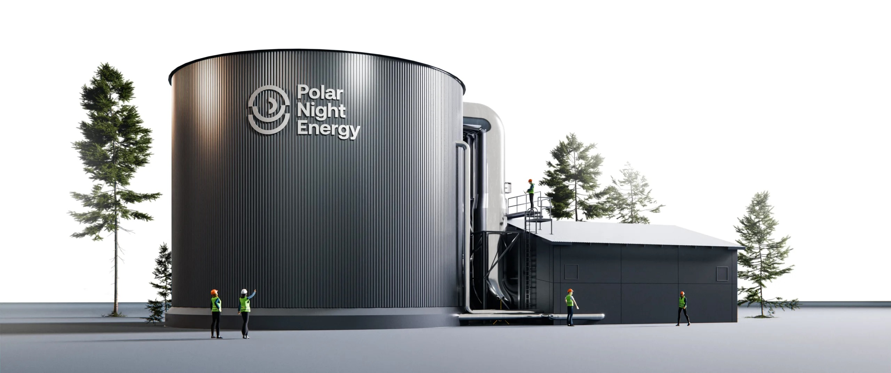

Wärme als Mechanismus des Energieaustauschs

Eine 2-MW-Sandbatterie. Bild mit freundlicher Genehmigung von Polar Night Energy.
Was für ein Artikel ist das?
Dieser Artikel ist ein Brainstorming bzw. eine Ideensammlung in einem frühen Stadium.
Zielgruppe
Dieser Artikel richtet sich an Fachleute in Industrieunternehmen, die – formell oder informell – für den Einkauf und die Nutzung von Energie verantwortlich sind.
Diese Verantwortung kann in verschiedenen Unternehmen bei unterschiedlichen Rollen liegen.
Neue Aspekte dieser Verantwortung können einige dieser Fachleute vor Herausforderungen stellen und sie sogar überfordern.
An sie richtet sich dieser Artikel ganz besonders.
Problem
Benachbarte Industriestandorte können einen unterschiedlichen Energiebedarf haben. Manche haben einen Überschuss an Energie. Anderen fehlt Energie, weil die Netzkapazität in ihrer Region nicht ausreicht.
Der Austausch von Energie kann für sie daher nicht nur interessant sein, sondern auch ein Faktor für den geschäftlichen Erfolg und manchmal sogar für das Überleben.
Ein naheliegender Weg, Energie auszutauschen, wäre Strom über das Netz. Das Netz kann ein einfacher Weg sein, wenn zum Beispiel ein Standort einen Überschuss an Solarenergie hat und dem anderen Standort elektrische Energie fehlt.
Manchmal kann oder will das Netz dies jedoch aus administrativen oder technischen Gründen nicht zulassen.
Lösung
Eine Lösung kann für manche Industriestandorte darin bestehen, Energie in andere Formen umzuwandeln und in dieser Form auszutauschen.
So stellt zum Beispiel das finnische Unternehmen Polar Night Energy Sandbatterien her, die Energie in Form von Wärme speichern.
Industriestandorte können ihre überschüssige Energie also in Wärme umwandeln und anschließend einen lokalen Wärmeaustausch aufbauen, der möglicherweise weniger administrativen oder technischen Einschränkungen unterliegt.
Interesse an einem Gespräch?
Kontaktieren Sie uns unter ij@ivorjuechtern.de.
In Deutschland ist Ivor Jüchtern zertifizierter BAFA-Berater und kann Sie beim Zugang zu einer Förderung für die Strategieberatung unterstützen.